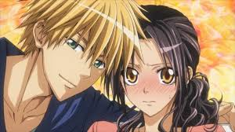
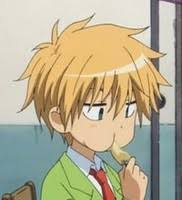
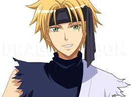
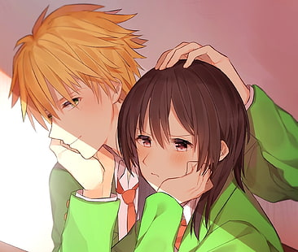
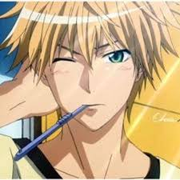

| Age: 17 |
| Blood type:O |
| Height: 186cm (6'1" ft) |
| School: Seika High (Formerly), Miyabigaoka |
One of the most popular boys at Seika High, Usui appears to take little interest in anything and prefers to observe things as they unfold, though proves to be extraordinarily talented in numerous areas. He develops an interest in Misaki and is the first to learn she is working at a maid café, but chooses to keep her secret and soon falls in love with her. While she dismisses his behavior simply as harassment, he continues to watch over and protect her, as well as offering insightful advice on how to deal with the boys at Seika effectively and fairly. He appears to be the only male student at school that Misaki is willing to speak to as an equal. Little is known about Usui's background and he is reluctant to speak about it, though he reveals a willingness to tell Misaki. He has an older brother and lives alone in an apartment. He's a pro in cooking, can play chess, is smart, jumps down roofs (but doesn't die), free all the time and always appears unexpectedly
10 Things You Need To Know About Takumi Usui
Usui, a silent but dangerous person, so mysterious yet only opened himself to Misaki. He is also a very popular boy in school because of his looks and talent. He is a very smart student, as well as being good at sports, and although very popular, he doesn't let it go to his head. On the contrary he seems to think the whole popularity-thing is rather troublesome. Most of the time, he has a nonchalant and apathetic attitude, but is always on the look-out for anything that may threaten or hurt Misaki, and he often saves her when she gets in trouble.
Usui is one of the best students in Seika High, excelling in most subjects and sports. Usui is incredibly talented and smart in studies. He often gets 1st Rank beating Misaki to second place (much to Misaki's initial annoyance). As stated by him: ranks are meaningless to him and he can always get the same Rank even if he does nothing about it. He grabs and understands concepts easily and even if he has a lot to learn, he can understand quite fast. If an equation is taught to him, he can figure out the rest by himself. He cares for Misaki and always helps her when she is in trouble(even if she says that she does not wants his help). He does not care about himself as long as it can help Misaki and even pushes himself off the limit.
He doesn't think twice about rejecting a girl's confession, something he seems to experience often, and Misaki is also unhappy about this as she views it as him "harassing" girls . He can also survive even after jumping from the school roof without protective gear, just to save the photo that contains the secret of Misaki being a maid. He excels in playing chess, the violin, cooking, formal table etiquettes as well as most sports, much to many people's surprise. He does not seem to do well with kids or animals. He is a quarter British and is able to speak English fluently, mostly using it to converse with his older brother or English relative, Maria Marizona. He once kissed Yukimura as a deliberate plan to stop Misaki feeling awkward and embarrassed around him after he stole her first kiss. This scene, as well as many others, prove the fact generally accepted by all the other characters that he does not really care about anything except Misaki.
Usui does not express any desire to sustain a long-term relationship with anybody, evident when Kanou asks him about it - he shaves off the question by saying dating is troublesome, which Kanou misinterprets as being that he wasn't serious about Misaki. However, later the two started dating. It is noted that he looks very similar to his brother, Gerard Walker, apart from the hair color, to the point that most of the guests that visited him thought Gerard was Usui when he wore a blond wig. Usui's relationship with his family does not seem to be a good one. Usui claims that he is the type of guy that likes to stalk people (especially Misaki) and is always there for her whenever she is in trouble. Like most guys, he is awkward and not very good when it comes to expressing his feelings, so generally reverts to making perverted comments and references. The only times he expresses himself clearly are on several occasions when he confesses openly: "I love you, Ayuzawa" or when he expresses himself through actions such as kisses or tight hugs, which Misaki initially passes off as displays of bold sexual harrassment. When Misaki expresses curiousity about his background, Usui gives her the condition that if she kisses him, he will tell her everything. He actually wants attention and a kiss from Misaki but he did it in the perverted way because he doesn't know how to express it out in the proper way. From Maria ( Usui's relative who is trying to convince him to transfer to Miyabigoaka and at the same time also spying him as it is an order from Usui's family), Misaki finally understands Usui's purpose of doing so and kisses him, causing him to be a bit surprised, but he does keep his promise and tells her everything he knows about himself in chapter 46 of the manga. In chapter 72, Usui leaves for England to resolve his issue with the Walker family.
It seems that Misaki is the first person that he developed feelings for. He often flirts and teases her(much to her annoyance). He usually stays around Misaki. He hates when people have dirty or perverted thoughts about her and gets very jealous when any other guy gets too close to her or draws her attention from him.his star sign is taurus
|  |  |  |  |  |